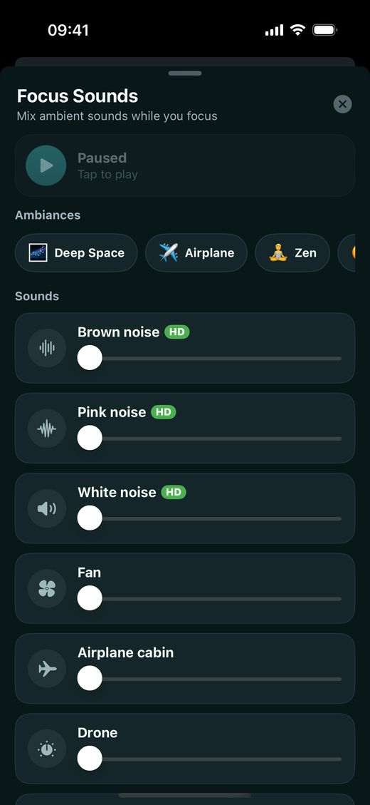
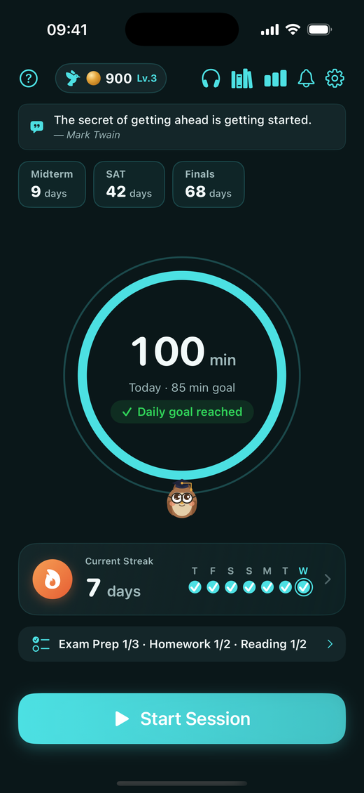
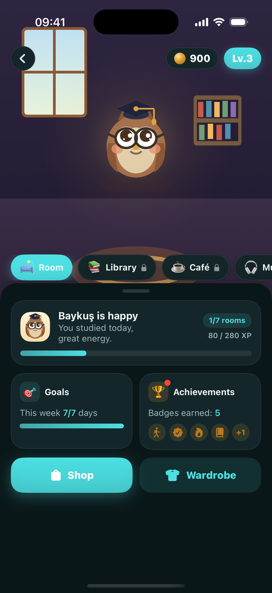
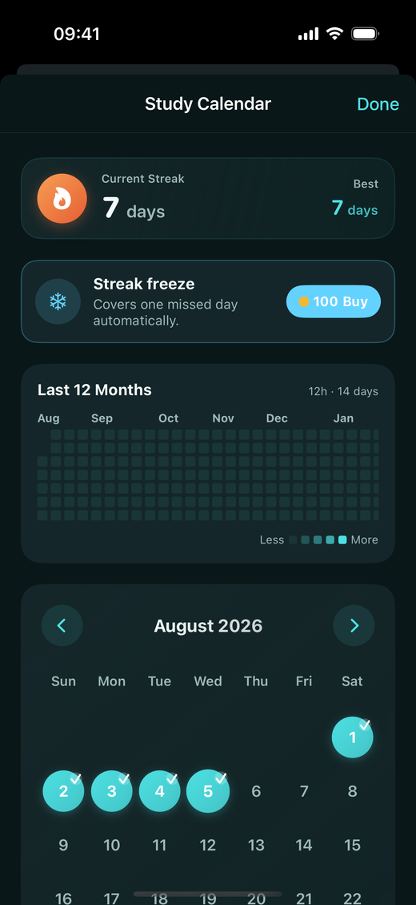
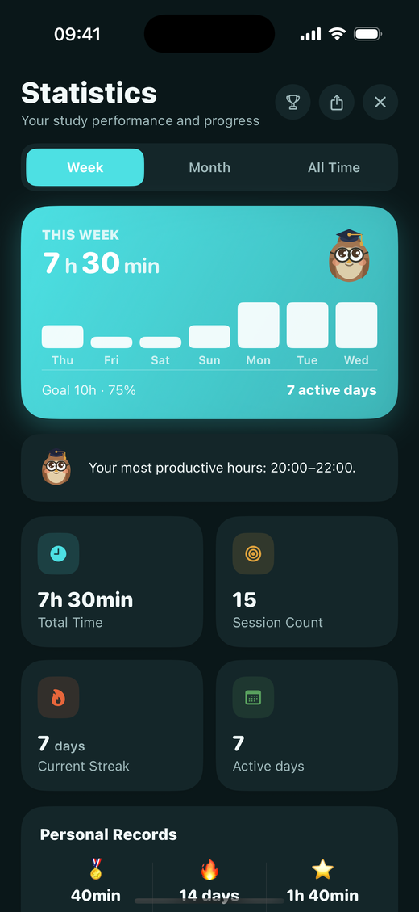
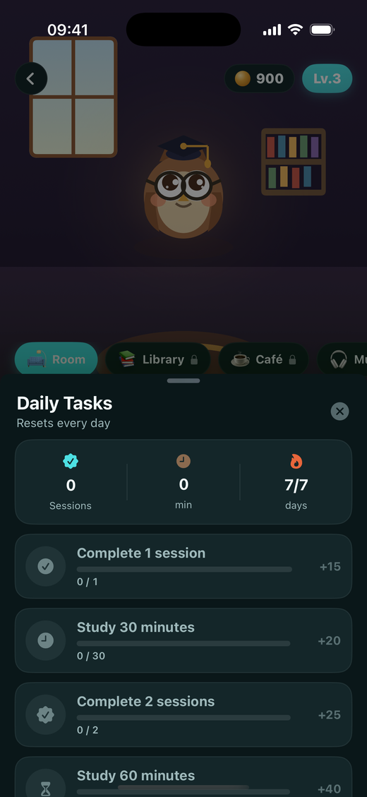

Beat procrastination with focused study sessions. Set a timer, build daily streaks, and stay motivated. Fully offline, no account needed.
Focus is easy to lose and hard to rebuild. Most study tools are cluttered, online-only, or simply get in the way.
Notifications and open tabs pull your attention away the moment you sit down to study.
Without visible progress, it's hard to stay consistent day after day.
Many apps feel heavy and clinical, turning a simple study session into a chore.
Short clips recorded straight from the app. No mockups, no edits.
The dial fills as the minutes pass, and your owl waits at the bottom.
Pick a colour and the phone above shows it before you commit.
Layer rain over a fire and set each one to its own volume.

A clean, distraction-free timer that turns scattered hours into focused sprints, one session at a time.
Pick 20, 40, or a custom duration and start a distraction-free session instantly.
Proven focus/break cycles keep your mind fresh through long study sessions.
Smart study reminders help you never miss a session.
Mix HD nature ambiances like rain, café and deep space while you study.
From the timer to your study owl: a quick tour of what you'll use every day.





Every feature nudges you along, so study time turns into clear progress and a habit that sticks.
Build a study habit that lasts. Watch your streak grow one day at a time.
26 themes, a timer dial and an effect on one screen, with a live preview. Nothing changes until you tap Done, and the app icon follows the color you pick.
See completed sessions and streaks at a glance to stay motivated.
No sign-up, no account, no distractions. Your data stays on your device.
Earn coins as you study and unlock rooms, outfits and achievements for your owl.
Start sprints from your wrist with the Apple Watch app. Full iPad support included.
Add every exam you're preparing for and see the days left on your home screen and Lock Screen.
Freeze tokens and one-day repair keep a busy day from breaking your streak.
Compete for weekly focus minutes and longest streak, and unlock 15 achievements along the way.
Add the books you're reading, log pages after a session and watch each one fill up.
Set how many sprints you want per subject, then watch the day fill in as you work.
Tie a session to an exam and see how many hours went into it. Finished sessions can go to Apple Calendar too.
Say why you're studying and the app suggests your subjects, a daily goal and an exam countdown. Change any of it later.
Settings has a search field and shortcuts to the rows you open most, so nothing is buried three taps deep.
"In the first week of using it, I watched my study output double."
"The app turned out really nice and practical, and the owl mascot is adorable."
"Seeing how much you have worked lifts your output. The motivational lines keep you going too."
Study Sprint Timer is now on the App Store. Simple, offline, and built to help you focus.
Download Now